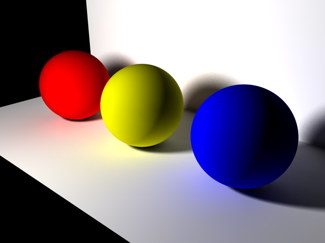

Linear Equation Solving
Falco Nogatz
February 2012
with Constraint Handling Rules


Falco Nogatz
Student @ Ulm University
Computer Science
Interests: web technologies and programming paradigms
Contact:
www: nogatz.net / ioexception.de
twitter: @ulmerleben
github: fnogatz


If A is a success in life, then A equals X plus Y plus Z. Work is X; Y is play; and Z is keeping your mouth shut.
If A is a success in life, then A equals X plus Y plus Z. Work is X; Y is play; and Z is keeping your mouth shut.
If A is a success in life, then A equals X plus Y plus Z. Work is X; Y is play; and Z is keeping your mouth shut.
eq(A, X+Y+Z).
eq(A, X+Y+Z),
eq(10*Z, X+Y),
eq(Y, 0.5*A).
eq(A, X+Y+Z).
eqz([[A,1],[X,-1],[Y,-1],[Z,-1]], 0).
eqz([], 0) <=> true.
eqz([], _) <=> false.
eqz([[Var, Coeff]], Abs) <=> Var is -1*(Abs/Coeff).
eqz([[A,1],[X,-1],[Y,-1],[Z,-1]], 0),
X is 1,
Y is 2,
Z is 3.
% A-1-2-3 = 0 -> A = 6
eqz(Vars, Abs) <=> member([V, C], Vars),
number(V), number(C)
|
stringify(Vars, Abs, R), eq(R, 0).eq(A, X+Y+Z),
eq(10*Z, X+Y),
eq(Y, 0.5*A).
eq(A-X-Y-Z, 0),
eq(10*Z-X-Y, 0),
eq(Y-0.5*A, 0).
eqz([[A,1],[X,-1],[Y,-1],[Z,-1]], 0),
eqz([[Z,10],[X,-1],[Y,-1]], 0),
eqz([[Y,1],[A,-0.5]], 0).
var_is(Var, VarsList, Absolute)behaves just as eqz, i.e. eliminates bound variables etc.
| Step | Change |
|---|---|
| 0 | eqz([[A,1],[X,-1],[Y,-1],[Z,-1]], 0), |
| 1 | var_is(A, [[X,1],[Y,1],[Z,1]], 0), |
| 2 | var_is(A, [[X,1],[Y,1],[Z,1]], 0), |
| 3 | var_is(A, [[X,1],[Y,1],[Z,1]], 0), |
| 4 | var_is(A, [[X,1],[Y,1],[Z,1]], 0), |
substitute @ var_is(X, XVars, XAbs) \ eqz(Vars, Abs) <=> member([X2, _], Vars), X2 == X | stringify(XVars, XAbs, Replaced), replace_var(Vars, Abs, X, Replaced, [], R), normalize(R, VarsN, AbsN), simplify(VarsN, VarsNs), eqz(VarsNs, AbsN). explicit @ eqz([[Var, Coeff]|Rest], Abs) <=> Cinv is -1/Coeff, mult_vars(Rest, Cinv, VarsN), AbsN is Abs*Cinv, var_is(Var, VarsN, AbsN).
| Step | Change |
|---|---|
| 0 | eqz([[A,1],[X,-1],[Y,-1],[Z,-1]], 0), |
| 1 | eqz([[X,-1],[Y,1],[Z,-1]], 0), |
| 2 | eqz([[X,-1],[Y,1],[Z,-1]], 0), |
lico([[A,2],[B,1]], [[A,1],[C,-1]], -2, LicoN). % LicoN = [[B,1],[C,2]].
eliminate @ eqz([[Var1, Coeff1]|Rest1], Abs1)
\ eqz([[Var2, Coeff2]|Rest2], Abs2)
<=> Var1 == Var2
|
Cinv is -1*(Coeff2/Coeff1),
AbsN is Abs1+Cinv*Abs2,
lico(
[[Var1, Coeff1]|Rest1],
[[Var2, Coeff2]|Rest2],
Cinv,
LicoN
),
simplify(LicoN, Lico),
eqz(Lico, AbsN).
| Variable Substitution | Row Operations |
|---|---|
| additional var_is | single rule |
| unordered variables | totally ordered |
| O(c² · v²) | O(c · v³) |
Take a view in the source files on Github: https://github.com/fnogatz/CHR-Linear-Equation-Solver
It's open-source!
Thanks to Benjamin Erb for the html5slides and uulm template.
Title photo: Tim Geers under CC-BY 2.0
{kind=link}